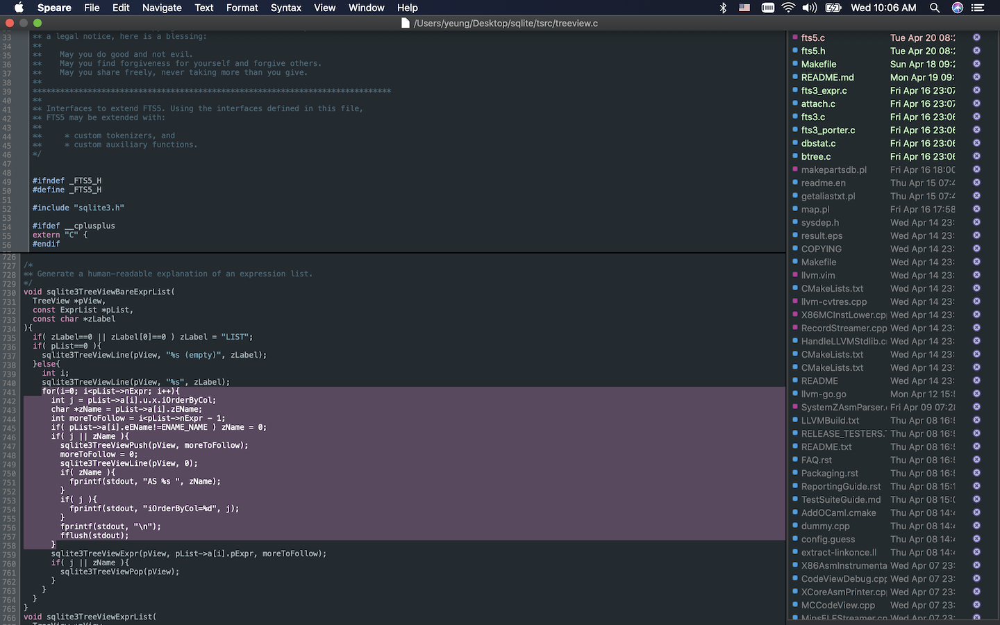

Speare
version 1.2.404
The ultra light code editor.
Speare is a small and friendly code editor. It was originally developed to provide a native scripting language debugging environment that seamlessly integrated with C and C++. You can use it to edit source code files, programming and debugging. Speare designed to make programming feels light, simple and free. Speare not only has an efficient code navigation and call routines tracing ability but also has flexibility to extend it to support special developing requirements. Speare includes an ultra lightweight debugging environment for C, C++, Ruby, mruby, Lua, Python, PHP, Perl and Tcl, and give people complete freedom to control and customise the debugging environment for a new programming language.
What's new
1. Syntax highlighting files that has no extension name by recognising it's Shebang.
2. Parallel editing mode: fast editing arbitrary files in parallel text views, the most important feature.
(version 1.2.404, release date: Jul 11 2021)

If you can't open the link above, please launch App Store and found Speare by searching.
Features
- Real ultra lightweight.
- Well designed workspace management. Intuitive and concise.
- High performance when managing large amount of files for big projects.
- Fast search and replace in current document, selected folder, opened files and entire project.
- Smoothly edit multiple files that written in different programming languages simultaneously.
- Supports 90+ programming language and document formats syntax highlighting and parsing.
- Auto-completion, sensitively typing, live parsing symbol definitions with editing actions.
- Jump to definition, fast locate code lines between editing files by symbol index, bookmarks or searching.
- Unlimited go back and forward, automatically remember jump location and current editing locations.
- Keeping entire state after quit, the opened files, selection of each file and the cursor location.
- Parallel editing. Fast editing arbitrary files in parallel text views.
- Real-time diff. Show coloured code block of file changes with editing actions instantly.
- Completely leverage keyboard shortcuts for fast editing.
- Fonts and colours customisation, supports self-defined schemes.
- Efficiently manage working on files across quit, re-launch and project switching.
- Full featured Markdown and HTML editor and previewer, run Javascript code instantly, well-support Web development.
- Code block selection by double clicking the beginning symbol or the beginning line of the block.
- Run syntax checking instantly.
- Unlimited shell script extensions, code beautifier, unit test, building automation etc.
- Preview all kinds of files, image, SVG, PDF, office documents, audio and video etc.
Screenshot

Screenshot of SQLite source code "Parallel Editing" in Speare code editor, "Parallel Editing" mode allows user stick one file in the bottom view and switch different files in the top view.
Using .diff files with the help of "Parallel Editing" mode has obvious advantage, copy code blocks in the bottom text view and fast switch different files in the top text view can efficiently edit files very fast, and Speare can index .diff files for big file changes very well comparing to other code editor and IDEs. And, Spear enable user edit arbitrary two souce code file side by side and also support edit source code file with built-in web browser side by side.
more screenshots: → screenshot references.
Fast edit several files separately
Just drag the file one by one from Finder and drop into workspace, edit them and then right-click to "Remove All".
Fast edit several files in big folder
Just drag the folder into workspace never mind how big it is and then edit several files never mind what the programming language they were written, fast editing them with the "Auto-completion" feature provided by Speare code editor.
Code editor on iPad
If you want to edit source code files on iPad, or review code on iPad, please refer another app developed by me, iCodeEditor, an integrated code editor for iPad. Sorry, it's not free.
Code editor and IDE on macOS
Diamond is small! Emphasise small software is never too much!
E.g. iTerm2 is better than Terminal.app, the latter is only 8.3MB, but the former is about 69MB! it's so big! so I throw it away immediately! neovim bring some excitements to developers, but it's still too big! bare installation is at least 25MB! and boring configurations! so I give up it immediately! I really don't know how big it will be if I configured up all languages! Although terminal based on text editors such as GNU Emacs and Vim, looks so cool, but their limitations are also obvious, the elephant in the room. As a programmer, so many text editor I've used in the past years, such as the bulky cargos, Visual Studio Code, Atom, Android Studio, Eclipse, ActiveState Komodo, Xcode, NetBeans, Eclipse, and some light cargos, e.g. Textadept, CotEditor and TextMate. TextMate is my favour many years, but I never use it anymore when Speare become to be the alternative, and I never try TextMate2 because of the same one reason, too big! I never like desktop applications that built with NodeJS, React and Electron, Eclipse and Java or .NET and C# based big stuffs. So, an extremely small code editor is the design goal of Speare to pursue, and also the design philosophy of this unique dev utility. Speare code editor was implemented extremely small but has the most important missing features in common code editors, such as code completion, parallel editing, instant diff, bookmark management, code block live parsing and efficiently tracing call routines, etc.
| No. | Name | Size | No. | Name | Size |
| 1 | Speare 1.2.56 | 5.6MB | 7 | Visual Studio Code (bare system) 1.36.1 | 211MB |
| 2 | TextMate 1.5.7 | 23.3MB | 8 | ActiveState Komodo 11.1 | 334MB |
| 3 | Textadept 10.4 | 35MB | 9 | Atom 1.38.2 | 558MB |
| 4 | CotEditor 3.3 | 47MB | 10 | Android Studio 3.1 | 1.37GB |
| 5 | Lazarus (without FreePascal compiler and source packages) 2.0.8 | 200.9MB | 11 | Eclipse IDE 4.12 | 400MB ~ 5GB |
| 6 | ZeroBraneStudio 6.0 | 602.1MB | 12 | Xcode 10.0 | 12GB |
The technology choices to make a code editor and IDE on macOS
| No. | Name | Pros | Cons |
|---|---|---|---|
| 1 | Vim/Emacs | Fav of big community | User experience is not so friendly |
| 2 | HTML5 + Electron | Mature code base open sourced | Low performance with huge run-time |
| 3 | Qt | Mature cross-platform GUI kit | Best for Linux, Windows but not suitable for macOS GUI app |
| 4 | GTK+ | Mature cross-platform GUI framework | Best for Linux but not suitable for macOS GUI app |
| 5 | Tcl/Tk | Rapid GUI app development kit | Lack low level native OS support features |
| 6 | Java Swing | Rapid development, mature cross-platform GUI kit | Low performance with huge run-time |
| 7 | C# + .NET | Fast implementing GUI app | Suitable for Windows but not suitable for macOS GUI app, Mono required (6.10 362.3MB!). |
| 8 | Native Cocoa | Mature, reliable, high performance | Best frameworks to build macOS app |
Speare code editor was developing based on the native pure Cocoa frameworks with leveraging several C library results a very small footprint, high performance, small memory and storage runtime consuming, and ultra small distribution. Only 1.1MB executable!
Why not big software?
Waste time to maintain, wast big storage and runtime memory, waste energy, waste time to upload and download. It's waste people's life! Every desktop developer should known one thing, the embedded system developers sometime even fighting for one byte of storage in some situation. They never think about memory and storage like embedded system developers, so more and more big monster there. In today's software industry, Unix philosophy has been throw away completely!
They make software as big as possible, as complex as possible, but I believe in the opposite philosophy.
Why another code editor and IDE on macOS?
Despite there are so many code editor and IDE available on macOS, but Speare code editor has its own unique characteristics:
Lightweight. Most of the code editors on macOS are very heavy, bulky! But Speare code editor is really really ultra light!High Performance. Code editor developed with Javascript or Java have inherent defects that can't keep high performance when handle thousands of files for big project, such as VSCode, Atom, and NetBeans, Eclipse. Speare code editor can handle very big project, for very big C & C++ projects, Java projects, Node projects, and very big game projects! Easily!Freedom. Feels light, simple and free. High performance code editor, flexibility to extend it to support special developing requirements and easily add a new programming language, most of these IDE on macOS can't give you such ability and freedom, can't give you smoothly coding experience when mixing multiple programming languages for big software projects. But Speare code editor give you very flexible control to extend it to add syntax highlighting for a special document and debugging environment for a new programming language.
Code browser, call routines tracing and code analysis
Speare code editor helps end user to understand an existing code base by powerful code browser and call routines tracing functions. Speare code editor parses source code files and maintains the database of symbol definitions instantly while user editing, and presents useful contextual information to user automatically. It also use persistent bookmarks to remember key locations within functions or classes and their references. End user can quickly navigate function calls and callers and find references to variable, function or class instantly.
Productive helps to fast find editing points
- Use "Recent List" to fast find recent opened and edited files.
- Use "Functions" to fast find the location of function definitions.
- Use "Bookmarks" to fast find the bookmarks placed for editing locations.
- Search symbol references and fast find the location of the reference points.
- Use "Parallel Editing" to fast edit files.
- Drag file or folder in the workspace to re-arrange their positions.
- Search items in the workspace.
- Use "Jump To Definition" to find the reference points, and click "Go Back" to return to jump point.
- Use "Changes" to fast find file changes.
Fast Editing
Speare developed as an ultra light code editor that completely leverage "Keyboard shortcuts" for fast editing. Keyboard shortcuts instead of "moving mouse and click" can notably improve code editing experience. Real programmer use keyboard shortcuts as a habit constantly. Real programmer use and write command line applications as a habit constantly. Keyboard shortcuts can help people fast move focus between workspace and text editor, and fast switch between running apps such as Debug Server, Fossil, Web browser and Speare.
Speare Keyboard Shortcuts
Please refer the table: → speare_shortcuts.pdf
Syntax Checking and Run Code Instantly
a. Press shortcut key "Command + R".
b. Click menu: "Command" → "Syntax Checking & Run".
Spear enable people to run arbitrary shell commands within editor.
Spear enable people to run shell scripts within editor with hot editing.
Spear enable people to write unlimited shell extension to do anything they want.
Crafting software as small as possible. → Why C is the returned king of programming languages.
Debug Mode
Despite the dragon is evil but it still can't escape under the claws of eagles.
Speare seamlessly support debugging C, C++, Ruby, mruby, Lua, Python, PHP, Perl and Tcl scripts, more info please refer here: → Speare debugger architecture.
Add a New Colour Scheme
Please download colour scheme boilerplate from here: colorschemes.tar.gz, uncompress it, edit the colour values to fit a new style, and then put it under the following directory to take effect.
Please create the directory if it does not exist.
Code Formatter/Code Beautifier
Supported languages:
a. C, C++, Objective‑C, C#, Java (built-in support).
b. Ruby, Lua, Python, Perl, PHP, Tcl, Swift, JavaScript, Shell scripts, Dart, Go and Rust.
(located in the formatters directory, requires a little configuration to let them work properly)
Ensure the formatters can be correctly working, you should take a look at above directory, the built-in formatters:
Integrated development environment
Speare code editor can easily integrate building tools, code analysis tools and continue deploy tools. You can run different tasks in Speare code editor instantly, such as automatic compile (run makefile, CMake, Ant tasks etc), building and packing, or run static code analysis tools (source code analyzer, such as PC-Lint, clang-analyzer, PHPLint, OCLint, SwiftLint, and PMD etc), unit testing tools, memory leak detection tools such as Valgrind, performance analysis tools, code style check tools, and any other tasks. Speare code editor provides you complete freedom to extend the editor to satisfy special requirements of your development environment.
Programming Languages and Document Types
The built-in parsers of Speare code editor can parse tons of common document formats and programming languages.
AMPL ASM ASP
a.The most popular document formarts: Plist, JSON, Markdown, Yaml, SVG, Protobuf, HTML, CSS, SCSS, Man, Asciidoc, Tex, Bibtex, Dtd, Pod, XML, Xslt, Xquery, XSD, Glade, RelaxNG and DbusIntrospect etc.
b. Configure files: Autoconf, Automake, Make, M4, Makefile, Vim, Kconfig, LdScript, AnsiblePlaybook, Varlink, WSDL, RSpec, QtMoc, WindRes, and Gradle, Ant and Maven2 etc.